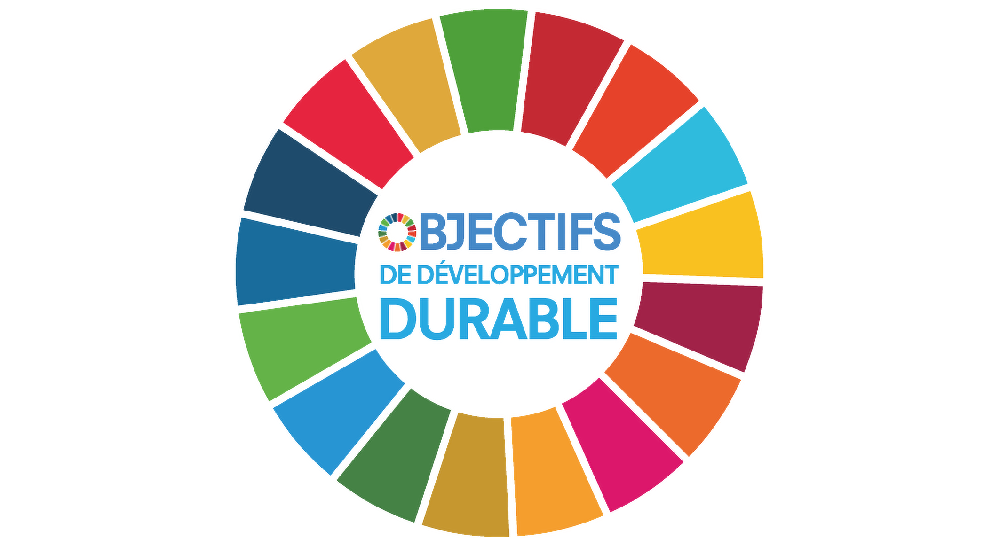

Les clés d'une gouvernance moderne et efficace
Publié le 15 mai 2026
Découvrez comment repenser votre gouvernance pour relever les défis actuels et construire une organisation résiliente...
Lire la suite →Fort de plus de 15 ans d'expérience dans le conseil aux organisations publiques et privées, j'accompagne les dirigeants dans la transformation de leurs structures. Ma double compétence en gouvernance et finance me permet d'apporter une vision globale et intégrée.
Découvrir mon parcoursJe vous accompagne avec une approche sur mesure, alliant rigueur académique et pragmatisme opérationnel.
Conception et mise en place de dispositifs de gouvernance performants, transparents et adaptés à votre organisation.
En savoir plus →Optimisation de votre structure financière et accompagnement dans vos décisions d'investissement et de financement.
En savoir plus →Accompagnement sur mesure pour définir et déployer votre stratégie de croissance et de transformation.
En savoir plus →Stratégies de développement durable et création de valeur partagée pour un impact positif.
En savoir plus →"Mamadou Bakayoko a su comprendre nos enjeux et nous accompagner avec pragmatisme et efficacité. Sa double compétence gouvernance-finance nous a permis d'avoir une vision globale et d'optimiser nos processus."
Directeur Général – Groupe Alpha
Découvrez mes analyses sur la gouvernance, la finance et le développement.
Publié le 15 mai 2026
Découvrez comment repenser votre gouvernance pour relever les défis actuels et construire une organisation résiliente...
Lire la suite →Publié le 2 mai 2026
Les bonnes pratiques pour sécuriser et développer votre entreprise face aux défis économiques actuels...
Lire la suite →
Publié le 24 avril 2026
Comment intégrer l'impact social et environnemental dans votre stratégie pour créer de la valeur durable...
Lire la suite →Discutons de vos enjeux et construisons ensemble la solution qui vous ressemble.
SARL au capital de 1 000 000 FCFA - RCCM: CI-ABJ-2015-B-9521 - IDU: CI-2015-0000729 E